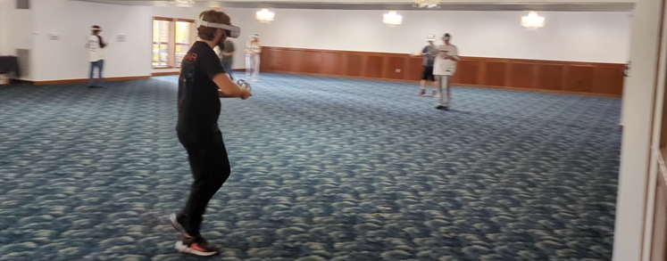
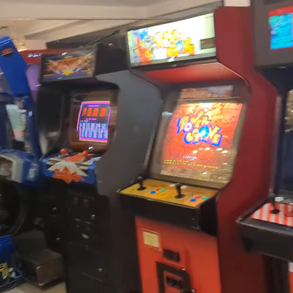
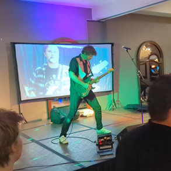

Catastrophic Inversion is a multiplayer VR shooter on Meta Quest that you can bring to any gym or other large space and really walk around the entire map: no joysticks or teleporting.
It comes with more than 10 virtual arenas with moving elements like elevators to take you to second-story platforms, or gondolas to carry you between towers, all while allowing multiple players to move around within the same playspace. (We've tested up to 10 players but there's no hard limit.)
Alignment is handled entirely within the Quest headset: it requires no external sensors or equipment (other than adequate Wi-Fi coverage to connect the devices anywhere in the space for a local networked game).
Reviews
So much fun, an absolute blast! ...The fact that they pulled this off seems like a miracle.
Consistent Wi-Fi coverage throughout your space to facilitate a connection between devices over the local network. (Internet access recommended, but not required. You could bring a home router and operate offline.)
A mid-range gaming laptop with the Steam edition of the game as a dedicated server and spectator feed. (Any headset can host the game, but a PC will make managing the game much easier.)
Consistent Wi-Fi coverage throughout your space to facilitate a connection between devices over the local network. (Internet access recommended, but not required. You could bring a home router and operate offline.)
A mid-range gaming laptop with the Steam edition of the game as a dedicated server and spectator feed. (Any headset can host the game, but a PC will make managing the game much easier.)
Compatible Headsets
We've tested the game on the three headsets listed below and it runs great on all of them. With each headset, you're also getting an amazing VR console that can also run a large collection of other games.
If you were at a recent event, your team photo may still be up for a little while.
You can find them on our Team Photos page.
Upcoming Events
October 11, 2025: Catastrophic Inversion will be returning to the Rock River Valley Video Game Convention (R2V2) in Rockford Illinois with a 3,600 ft2 playspace, included for all convention guests at no extra charge!

If you're in the area, you do not want to miss this event! In addition to Catastrophic Inversion, there will be a vast playable video game library, free-play arcade machines, game tournaments, games & memorabilia for sale, and a live video game music concert at the end of the day.


Hear the hosts talk about how we did last year.
About The Developer
We are an independent studio operated by a solo developer with a little help from his friends. We have no investors to tell us to rake our customers over the coals for profit, so we're just trying to make the best games we can.
Allen - Development
Emily - Business
Kevin - Soundtrack
If you're looking for non-monetary ways to support us:
Spread the word about us to your favorite gaming creators, events, or venues. Leave a review on a platform where you purchased the game. Post on social media about your experience playing the game. Follow us on social media. Thank you!